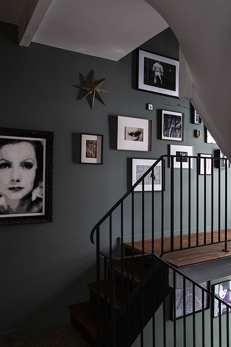
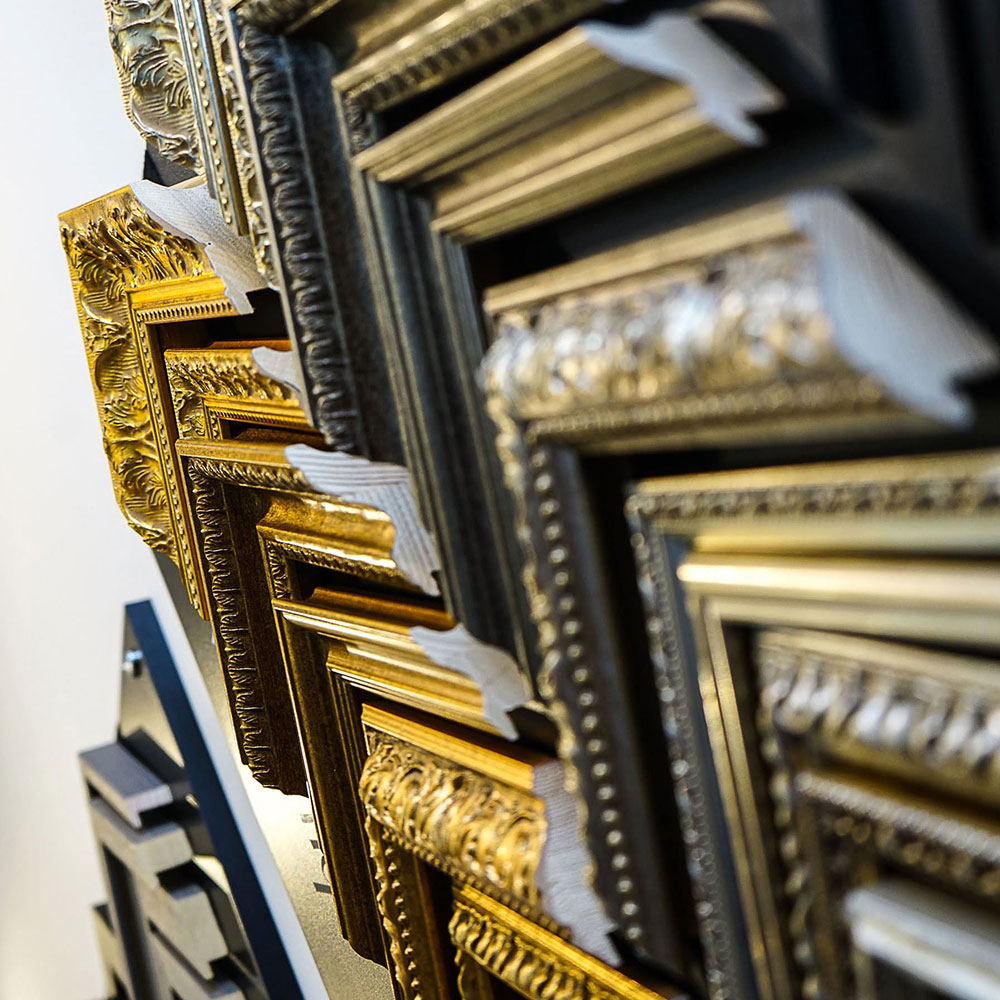
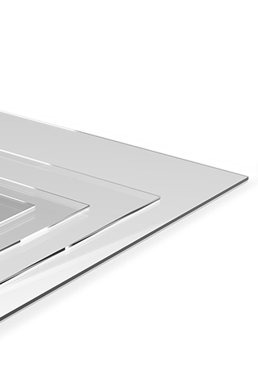

Sur mesure
Encadrement sur mesure au Luxembourg
L'encadrement d'art est avant tout de l'artisanat, et il existe des centaines de possibilités. L'originalité et la subtilité de l'encadrement font toute la différence dans la mise en valeur de vos œuvres.

Mettre l'œuvre en valeur, selon votre budget
Notre objectif principal est la mise en valeur de l'œuvre, en tenant compte de la sensibilité de chacun, avec un budget adapté grâce à une gamme étendue de moulures tous styles, du contemporain au classique.
Styles de nos moulures : modernes, noir, blanc, chêne, or, wengé, gris, couleurs.
Quelques techniques du sur-mesure
- La Marie-Louise biseautéeLe haut de gamme du passe-partout : elle crée une profondeur sur vos sujets, montage traditionnel et moderne à la fois.
- La caisse américaineLe type d'encadrement le plus répandu au monde : une mise en valeur par effet de suspension, l'œuvre flotte dans le cadre.
- La technique de rehausseUn sujet, un verre de protection, une moulure et une rehausse pour que le verre soit en suspension au-dessus du sujet.
Les baguettes Nielsen, 4 univers
- NatureBois naturel, massif et placage.
- ColorUn monde tout en couleur : vives ou pastel, mates ou brillantes.
- DesignDes lignes pures, associées à des finitions sobres ou métallisées.
- CharmeL'univers des dorures, des patines à l'ancienne et des finitions blanchies.


